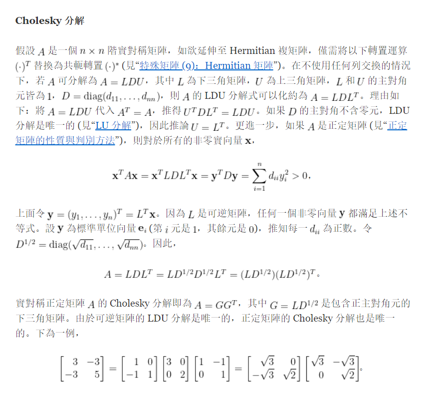

<!DOCTYPE html>


<html lang="zh-CN">


<head>
  <meta name="baidu-site-verification" content="codeva-NSg7ynviLa" />
  <meta charset="utf-8" />
    
  <meta name="viewport" content="width=device-width, initial-scale=1, maximum-scale=1" />
  <title>
    矩阵分解 |  
  </title>
  <meta name="generator" content="hexo-theme-ayer">
  
  <link rel="shortcut icon" href="/images/mojie.jpg" />
  
  
<link rel="stylesheet" href="/dist/main.css">

  <link rel="stylesheet" href="https://cdn.jsdelivr.net/gh/Shen-Yu/cdn/css/remixicon.min.css">
  
<link rel="stylesheet" href="/css/custom.css">

  
  <script src="https://cdn.jsdelivr.net/npm/pace-js@1.0.2/pace.min.js"></script>
  
  

  

<link rel="alternate" href="/atom.xml" title="null" type="application/atom+xml">
</head>

</html>

<body>
  <div id="app">
    
      
    <main class="content on">
      <section class="outer">
  <article
  id="post-矩阵分解"
  class="article article-type-post"
  itemscope
  itemprop="blogPost"
  data-scroll-reveal
>
  <div class="article-inner">
    
    <header class="article-header">
       
<h1 class="article-title sea-center" style="border-left:0" itemprop="name">
  矩阵分解
</h1>
 

    </header>
     
    <div class="article-meta">
      <a href="/posts/46823193/" class="article-date">
  <time datetime="2022-06-03T02:51:57.000Z" itemprop="datePublished">2022-06-03</time>
</a> 
  <div class="article-category">
    <a class="article-category-link" href="/categories/%E7%90%86%E8%AE%BA%E5%AD%A6%E4%B9%A0/">理论学习</a> / <a class="article-category-link" href="/categories/%E7%90%86%E8%AE%BA%E5%AD%A6%E4%B9%A0/%E7%BA%BF%E6%80%A7%E4%BB%A3%E6%95%B0/">线性代数</a>
  </div>
  
<div class="word_count">
    <span class="post-time">
        <span class="post-meta-item-icon">
            <i class="ri-quill-pen-line"></i>
            <span class="post-meta-item-text"> 字数统计:</span>
            <span class="post-count">3.8k</span>
        </span>
    </span>

    <span class="post-time">
        &nbsp; | &nbsp;
        <span class="post-meta-item-icon">
            <i class="ri-book-open-line"></i>
            <span class="post-meta-item-text"> 阅读时长≈</span>
            <span class="post-count">18 分钟</span>
        </span>
    </span>
</div>
 
    </div>
      
    <div class="tocbot"></div>


  
    <div class="article-entry" itemprop="articleBody">
       
  <link rel="stylesheet" type="text/css" href="https://cdn.jsdelivr.net/hint.css/2.4.1/hint.min.css"><p>矩阵分解，就是将一个矩阵分解为比较简单或性质较好的几个矩阵的乘积。</p>
<span id="more"></span>
<h1>半正定矩阵的平方</h1>
<p>设 $\mathbf{A}$ 为半正定 (正定) 矩阵，则存在<strong>唯一</strong>半正定 (正定) 矩阵 $\mathbf{B}$ ，使得<br>
$$<br>
\mathbf{A = B^{2}}<br>
$$<br>
反过来，我们称矩阵 $\mathbf{B}$ 为 $\mathbf{A}$ 的平方根，记为 $\mathbf{A}^{1/2}$ 。</p>
<p><strong>证明</strong>： 设 $\mathbf{A}$ 为 $n \times n$ 的半正定 (正定) 矩阵，其可对角化为<br>
$$<br>
\mathbf{A} = \mathbf{U} \ \mathrm{diag}(\lambda_{1},\cdots, \lambda_{n}) \mathbf{U}^{<em>}<br>
$$<br>
其中 $\lambda_{1} \geq \cdots \geq \lambda_{n} \geq 0$ 为  $\mathbf{A}$ 的特征值，令<br>
$$<br>
\mathbf{B} = \mathbf{U} \ \mathrm{diag}(\lambda_{1}^{1/2},\cdots, \lambda_{n}^{1/2}) \mathbf{U}^{</em>}<br>
$$<br>
显然，$\mathbf{B} \geq 0$ 且 $\mathbf{B}^{2} = \mathbf{A} $ 。</p>
<p>下面我们证明唯一性，假设存在另外一个 Hermite 矩阵 $\mathbf{C} \geq 0$ 且 $\mathbf{C}^{2} = \mathbf{A} $ ，那么假设  $\mathbf{C}$ 可对角化为下式，其中 $u_{1} \geq \cdots \geq u_{n} \geq 0$<br>
$$<br>
\mathbf{C} = \mathbf{W} \ \mathrm{diag}(u_{1},\cdots, u_{n}) \mathbf{W}^{<em>}<br>
$$<br>
并且我们有<br>
$$<br>
\mathbf{C}^{2} = \mathbf{W} \ \mathrm{diag}(u_{1}^{2},\cdots, u_{n}^{2}) \mathbf{W}^{</em>} = \mathbf{A}<br>
$$<br>
故 $u_{1}^{2},\cdots, u_{n}^{2}$ 为 $\mathbf{A}$ 的特征值，因此 $u_{i}^{2} = \lambda_{i}$ ，于是<br>
$$<br>
\mathbf{C} = \mathbf{W} \ \mathrm{diag}(\lambda_{1}^{1/2},\cdots, \lambda_{n}^{1/2}) \mathbf{W}^{<em>}<br>
$$<br>
再由 $\mathbf{B}^{2} = \mathbf{C}^{2}$ 得到<br>
$$<br>
\mathbf{U} \ \mathrm{diag}(\lambda_{1},\cdots, \lambda_{n}) \mathbf{U}^{</em>} = \mathbf{W} \ \mathrm{diag}(\lambda_{1},\cdots, \lambda_{n}) \mathbf{W}^{<em>}<br>
$$<br>
等价地<br>
$$<br>
\mathbf{W}^{</em>} \mathbf{U} \ \mathrm{diag}(\lambda_{1},\cdots, \lambda_{n})  = \mathrm{diag}(\lambda_{1},\cdots, \lambda_{n}) \mathbf{W}^{<em>} \mathbf{U}<br>
$$<br>
记 $\mathbf{W}^{</em>} \mathbf{U} = (d_{ij})$ ，即其元素为 $d_{ij}$ 。根据矩阵乘积的法则 ( $\mathbf{AB}<em>{ij}$ 等于 $\mathbf{A}$ 的第 $i$ 行乘以 $\mathbf{B}$ 的第 $j$ 列  )，左右两边元素相等，得到<br>
$$<br>
d</em>{ij} \lambda_{j} = \lambda_{i} d_{ij}, \quad i,j = 1,\cdots,n<br>
$$<br>
因而当 $\lambda_{i} \neq \lambda_{j}$ 时，必有 $d_{ij} = 0$ 。因此无论  $\lambda_{i}$  和  $\lambda_{j}$ 是否相等，我们总有<br>
$$<br>
d_{ij} \lambda_{j}^{1/2} = d_{ij} \lambda_{i}^{1/2} , \quad i,j = 1,\cdots,n<br>
$$<br>
也就是<br>
$$<br>
\mathbf{W}^{<em>} \mathbf{U} \ \mathrm{diag}(\lambda_{1}^{1/2},\cdots, \lambda_{n}^{1/2})  = \mathrm{diag}(\lambda_{1}^{1/2},\cdots, \lambda_{n}^{1/2}) \mathbf{W}^{</em>} \mathbf{U}<br>
$$<br>
等价于<br>
$$<br>
\mathbf{U} \ \mathrm{diag}(\lambda_{1}^{1/2},\cdots, \lambda_{n}^{1/2}) \mathbf{U}^{<em>} = \mathbf{W} \ \mathrm{diag}(\lambda_{1}^{1/2},\cdots, \lambda_{n}^{1/2}) \mathbf{W}^{</em>}<br>
$$<br>
即<br>
$$<br>
\mathbf{B = C}<br>
$$<br>
因此唯一性得证，定理证毕。</p>
<h1>奇异值分解</h1>
<p>对于任意 $m \times n$ 秩为 $r$ 的矩阵 $\mathbf{A}$ ，其均存在奇异值分解形式 $\mathbf{A = U \Sigma V^{*}}$ ，其中 $\mathbf{U}$ 和 $\mathbf{V}$ 分别为 $m \times m$ 和 $n \times n$ 的酉 (正交) 矩阵，$\mathbf{\Sigma} = \mathrm{diag}(\lambda_{1},\cdots, \lambda_{r}) $ 为 $m \times n$ 的对角矩阵, $\lambda_{i} &gt; 0, i = 1,\cdots, r$  。</p>
<p><strong>证明</strong>：我们知道 $\mathbf{A^{<em>}A} \geq 0$ ，因此其特征值均为非负数，假设其正特征值为 $\lambda_{1}^{2}, \cdots,\lambda_{r}^{2}$ ，因此其可以对角化为<br>
$$<br>
\mathbf{V^{</em>}A^{<em>}AV} = \left( \begin{array}{c}<br>
\mathbf{\Lambda^{2}} &amp; \mathbf{0} \<br>
\mathbf{0} &amp; \mathbf{0} \<br>
\end{array} \right)<br>
$$<br>
其中 $\mathbf{\Lambda^{2}} = \mathrm{diag}(\lambda_{1}^{2}, \cdots,\lambda_{r}^{2})$  ，记 $\mathbf{B = AV}$ ，因此上式变为<br>
$$<br>
\mathbf{B^{</em>}B} = \left( \begin{array}{c}<br>
\mathbf{\Lambda^{2}} &amp; \mathbf{0} \<br>
\mathbf{0} &amp; \mathbf{0} \<br>
\end{array} \right)<br>
$$<br>
这表明 $\mathbf{B}$ 的 $n$ 个列互相正交，且前 $r$ 个列向量长度分别为  $\lambda_{1}, \cdots,\lambda_{r}$ ( $\lambda_{i} &gt; 0$ ) ，后 $n - r$ 列均为 $\mathbf{0}$ 向量。</p>
<p>于是，存在一个酉矩阵 $\mathbf{U}$ ，可以将  $\mathbf{B}$  表示为<br>
$$<br>
\mathbf{B} = \mathbf{U} \left( \begin{array}{c}<br>
\mathbf{\Lambda} &amp; \mathbf{0} \<br>
\mathbf{0} &amp; \mathbf{0} \<br>
\end{array} \right)<br>
$$<br>
于是我们得证 $\mathbf{AV = U \Sigma }$ ，因此得证。</p>
<h2 id="性质">性质</h2>
<p>根据证明过程，我们知道 $\mathbf{V}$ 是 $\mathbf{A^{<em>}A}$ 的特征向量组成的矩阵，$\lambda_{1}^{2},\cdots, \lambda_{r}^{2}$ 为  $\mathbf{A^{</em>}A}$ 的特征值。</p>
<p>同理，根据下式我们可得，<br>
$$<br>
\mathbf{AA^{<em>} = U \Sigma V^{</em>} V \Sigma^{<em>}  U^{</em>}  = } \mathbf{U} \left( \begin{array}{c}<br>
\mathbf{\Lambda^{2}} &amp; \mathbf{0} \<br>
\mathbf{0} &amp; \mathbf{0} \<br>
\end{array} \right)  \mathbf{U}^{<em>}<br>
$$<br>
因为，我们知道 $\mathbf{U}$ 的列是 $\mathbf{AA^{</em>}}$ 的特征向量 ，$\lambda_{1}^{2},\cdots, \lambda_{r}^{2}$ 为  $\mathbf{AA^{*}}$ 的特征值。</p>
<p>$\lambda_{1},\cdots, \lambda_{n}$ 称为 矩阵 $\mathbf{A}$ 的<strong>奇异值</strong>，奇异值是<strong>唯一的</strong>，但是  $\mathbf{U}$ 和 $\mathbf{V}$ 不唯一。 矩阵 $\mathbf{A}$ 的秩等于非零奇异值的数目，证明很简单，由于 $\mathbf{U}$ 和 $\mathbf{V}$ 均为满秩矩阵，因此 $r \left( \mathbf{A} \right) = r \left( \mathbf{U \Sigma V^{*}} \right) =  r \left( \mathbf{ \Sigma } \right)$ 。</p>
<p>当 矩阵 $\mathbf{A}$ 的秩序为 $r$ ，设 $\mathbf{U}<em>{1} = (\mathbf{u</em>{1},\cdots,u_{r}})$ ， $\mathbf{V}<em>{1} = (\mathbf{v</em>{1},\cdots,v_{r}})$ ，则 $\mathbf{A = U_{1} \Sigma_{1} V^{<em>}<em>{1}}$ ，证明如下<br>
$$<br>
\begin{aligned}<br>
\mathbf{A} &amp;= \left( \begin{array}{c}<br>
\mathbf{U}</em>{1} &amp; \mathbf{U}<em>{2} \<br>
\end{array} \right)<br>
\left( \begin{array}{c}<br>
\mathbf{\Sigma</em>{1}} &amp; \mathbf{0} \<br>
\mathbf{0} &amp; \mathbf{0} \<br>
\end{array} \right)<br>
\left( \begin{array}{c}<br>
\mathbf{V_{1}^{</em>}} \<br>
\mathbf{V_{2}^{<em>}} \<br>
\end{array} \right) \<br>
&amp;= \mathbf{U_{1} \Sigma_{1} V^{</em>}_{1}} \</p>
<p>\end{aligned}<br>
$$</p>
<h1>极分解</h1>
<p>设 $\mathbf{A}$ 为 $n \times n$ 的方阵，则存在 $n \times n$ 的酉矩阵 $\mathbf{U}$ 和 $n \times n$ 的半正定矩阵 $\mathbf{S}$ ，使得<br>
$$<br>
\mathbf{A = SU}<br>
$$<br>
若 $\mathbf{A}$ 可逆，则这种分解是<strong>唯一</strong>的。</p>
<p><strong>证明</strong>：对 $\mathbf{A}$ 进行奇异值分解得到 $\mathbf{A}  = \mathbf{ P \Sigma Q^{<em>}}$ ，稍做转换得到<br>
$$<br>
\begin{aligned}<br>
\mathbf{A}  &amp;= \mathbf{ P \Sigma P^{</em>} P Q^{*}} \<br>
\mathbf{A}  &amp;= \mathbf{ SU} \</p>
<p>\end{aligned}<br>
$$<br>
其中<br>
$$<br>
\mathbf{S = P \Sigma P^{*}} \geq 0<br>
$$</p>
<p>$$<br>
\mathbf{U = PQ^{*}}<br>
$$</p>
<p>其中 $\mathbf{U}$ 为酉矩阵，得证存在性。</p>
<p>下面我们证明 $\mathbf{A}$ 可逆时极分解的唯一性，假设 $\mathbf{A = S_{1}U_{1} = S_{2}U_{2}}$ ，其中  $\mathbf{U_{1}}$ 和   $\mathbf{U_{2}}$  为酉矩阵， $\mathbf{S}<em>{1}$ 和  $\mathbf{S}</em>{2}$ 皆正定（因为 $r\left( \mathbf{A} \right) = r\left( \mathbf{SU} \right) \leq r\left( \mathbf{S} \right) $ 。</p>
<p>并且我们有  $\mathbf{AA^{<em>} = S^{2}<em>{1} = S^{2}</em>{2} }$ ，我们知道  $\mathbf{S}<em>{1}$ 和  $\mathbf{S}</em>{2}$ 均为半正定矩阵  $\mathbf{AA^{</em>}}$ 的平方根矩阵，我们已知半正定矩阵的平方根矩阵是唯一的，因此  $\mathbf{S_{1} = S_{2}}$ 。同时我们有<br>
$$<br>
\mathbf{U_{1} = S_{1}^{-1}A =  S_{2}^{-1}A = U_{2}}<br>
$$<br>
得证唯一性，证明完毕。</p>
<h1>Schur 酉三角分解</h1>
<p>设 $\mathbf{A}$ 为复方矩阵，则存在酉矩阵 $\mathbf{U}$ ，使得<br>
$$<br>
\mathbf{A = ULU^{*}}<br>
$$<br>
其中 $\mathbf{L}$ 为上 (或下) 三角矩阵，其对角元素为 $\mathbf{A}$ 的特征值。</p>
<p>若  $\mathbf{A}$ 为实方阵且特征值均是实数，则 $\mathbf{U}$ 为正交矩阵。</p>
<p><strong>证明</strong>：对 $\mathbf{A}$ 的阶数采用数学归纳法证明，对 $n=1$ ，命题显然成立（$1=1\times1\times1$ ，其实 从 $n=2$ 开始更好理解 ）。</p>
<p>现在假设命题对 $(n-1) \times (n-1)$ 的方阵成立，设  $\mathbf{A}$ 为 $n$ 阶方阵，其特征值为 $\lambda_{1},\cdots, \lambda_{n}$ ，令 $\mathbf{w}<em>{1}$ 为相对于 $\lambda</em>{1}$ 的<strong>单位</strong>特征向量，我们可以得到一组包含 $\mathbf{w}<em>{1}$ 的 $\mathbf{C}^{n}$ 的一组基，利用格拉姆-施密特正交化过程，将这些向量转化为一组标准正交基，$\mathbf{w}</em>{1},\cdots,\mathbf{w}<em>{n}$ ，定义酉矩阵 $\mathbf{U}</em>{0} = (\mathbf{w}<em>{1},\cdots,\mathbf{w}</em>{n})$ ，则<br>
$$<br>
\mathbf{U_{0}^{<em>}AU_{0}} = \left( \begin{array}{c}<br>
\lambda_{1} &amp; \mathbf{</em>} \<br>
\mathbf{0} &amp; \mathbf{A_{1}} \<br>
\end{array} \right)<br>
$$<br>
其中第一列为 $\mathbf{U_{0}^{<em>}Aw_{1}} = \lambda_{1} \mathbf{U_{0}^{</em>}}  \mathbf{w_{1}} = \lambda_{1} \mathbf{e}<em>{1}$  ，即第一列第一个元素为 $\lambda</em>{1}$ ，其他元素为 0 。</p>
<p>其中 $\mathbf{A}<em>{1}$ 为 $(n-1) \times (n-1)$ 的方阵，由于 $\mathbf{A}$ 和  $\left( \begin{array}{c}<br>
\lambda</em>{1} &amp; \mathbf{<em>} \<br>
\mathbf{0} &amp; \mathbf{A_{1}} \<br>
\end{array} \right)$ 相似，因此特征值相同，因此  $\mathbf{A}<em>{1}$ 的特征值为  $\lambda</em>{2},\cdots, \lambda_{n}$ 。由于我们假设命题对 $(n-1) \times (n-1)$ 的方阵成立，因此存在 $n-1$ 阶的酉矩阵 $\mathbf{U}<em>{1}$ ，使得<br>
$$<br>
\mathbf{A</em>{1} = U_{1}L_{1}U^{</em>}<em>{1}}<br>
$$<br>
这里 $\mathbf{L}</em>{1}$ 为上三角矩阵，其对角元素为  $\mathbf{A}<em>{1}$ 的特征值 $\lambda</em>{2},\cdots, \lambda_{n}$ ，令<br>
$$<br>
\begin{aligned}<br>
\mathbf{U} &amp;= \mathbf{U_{0}} \left( \begin{array}{c}<br>
1 &amp; \mathbf{0} \<br>
\mathbf{0} &amp; \mathbf{U_{1}} \<br>
\end{array} \right) \</p>
<p>\mathbf{L} &amp;= \left( \begin{array}{c}<br>
\lambda_{1} &amp; \mathbf{*} \<br>
\mathbf{0} &amp; \mathbf{L_{1}} \<br>
\end{array} \right)</p>
<p>\end{aligned}<br>
$$<br>
我们有下式成立，因此 $\mathbf{U}$ 为酉矩阵<br>
$$<br>
\begin{aligned}</p>
<p>\mathbf{U}^{<em>} \mathbf{U} &amp;=\left( \begin{array}{c}<br>
1 &amp; \mathbf{0} \<br>
\mathbf{0} &amp; \mathbf{U_{1}}^{</em>} \<br>
\end{array} \right) \mathbf{U_{0}}^{*}  \mathbf{U_{0}} \left( \begin{array}{c}<br>
1 &amp; \mathbf{0} \<br>
\mathbf{0} &amp; \mathbf{U_{1}} \<br>
\end{array} \right) \</p>
<p>&amp;= \left( \begin{array}{c}<br>
1 &amp; \mathbf{0} \<br>
\mathbf{0} &amp; \mathbf{U_{1}}^{*} \<br>
\end{array} \right)  \left( \begin{array}{c}<br>
1 &amp; \mathbf{0} \<br>
\mathbf{0} &amp; \mathbf{U_{1}} \<br>
\end{array} \right) \</p>
<p>&amp;= \mathbf{I}<br>
\end{aligned}<br>
$$<br>
同时我们有<br>
$$<br>
\begin{aligned}</p>
<p>\mathbf{ULU^{<em>}} &amp;=  \mathbf{U_{0}} \left( \begin{array}{c}<br>
1 &amp; \mathbf{0} \<br>
\mathbf{0} &amp; \mathbf{U_{1}} \<br>
\end{array} \right)   \left( \begin{array}{c}<br>
\lambda_{1} &amp; \mathbf{</em>} \<br>
\mathbf{0} &amp; \mathbf{L_{1}} \<br>
\end{array} \right) \left( \begin{array}{c}<br>
1 &amp; \mathbf{0} \<br>
\mathbf{0} &amp; \mathbf{U_{1}}^{<em>} \<br>
\end{array} \right) \mathbf{U_{0}}^{</em>} \</p>
<p>&amp;=  \mathbf{U_{0}} \left( \begin{array}{c}<br>
\lambda_{1} &amp; \mathbf{<em>} \<br>
\mathbf{0} &amp; \mathbf{U_{1}L_{1}U_{1}^{</em>}} \<br>
\end{array} \right)  \mathbf{U_{0}}^{*} \</p>
<p>&amp;=  \mathbf{U_{0}} \left( \begin{array}{c}<br>
\lambda_{1} &amp; \mathbf{<em>} \<br>
\mathbf{0} &amp; \mathbf{A_{1}} \<br>
\end{array} \right)  \mathbf{U_{0}}^{</em>} \</p>
<p>&amp;= \mathbf{A}<br>
\end{aligned}<br>
$$<br>
因此，我们证明了 $\mathbf{L}$ 为上三角矩阵的情形。若对 $\mathbf{A}^{<em>}$ 进行上面的分解，则有 $\mathbf{A^{</em>} = ULU^{<em>}}$ ，此时则有 $\mathbf{A = U^{</em>}L^{*} U}$  ，因此同样可以分解为下三角矩阵的情况。</p>
<p>最后看 $\mathbf{A}$ 为实方阵且特征值均是实数的情况，此时它的特征向量都可以取为实向量。简单证明一下若  $\mathbf{A}$ 为实方阵且特征值均是实数，则它的特征向量都可以取为实向量。第一种是 $(\mathbf{A} - \lambda \mathbf{I}) \mathbf{x} = \mathbf{0}$ ，此时特征向量就是在实矩阵的零空间中，因此显然其可以为实向量；第二种是假设特征值 $\lambda$ 存在一个复特征向量 $\mathbf{x}$ ，则 $\mathbf{Ax} = \lambda \mathbf{x}$ ，共轭得到   $\mathbf{\bar{A} \bar{x}} = \mathbf{A \bar{x}} = \bar{\lambda} \mathbf{\bar{x}}= \lambda \mathbf{\bar{x}}$ ，即 $\lambda$ 和 $\mathbf{\bar{x}}$ 也是一组特征值和特征向量，两个方程相加得到 $\mathbf{A(x+\bar{x})} = \lambda \mathbf{(x+\bar{x})}$ ，因此我们一定可以找到一个实特折向量 $\mathbf{x+\bar{x}}$ 。</p>
<p>然后我们同样采用上面的归纳法证明，只是此时 $\mathbf{U}<em>{0}$ ， $\mathbf{U}</em>{1}$ 需要替换为正交矩阵，证明略。</p>
<h1>满秩分解</h1>
<p>对于任意 $m \times n$ 秩为 $r$ 的矩阵 $\mathbf{A}$ ，则存在 $m \times r$ 和 $r \times n$ 且秩皆为 $r$ 的矩阵 $\mathbf{B}$ 和 $\mathbf{C}$ ，使得 $\mathbf{A = BC}$ 。</p>
<p><strong>证明</strong>：设 矩阵 $\mathbf{A}$ 的相抵标准形如下，其中 $\mathbf{P}$  和  $\mathbf{Q}$ 为  $m \times m$ 和  $n\times n$ 的可逆矩阵<br>
$$<br>
\mathbf{A} = \mathbf{P} \left( \begin{array}{c}<br>
\mathbf{I_{r}} &amp; \mathbf{0} \<br>
\mathbf{0} &amp; \mathbf{0} \<br>
\end{array} \right) \mathbf{Q}<br>
$$<br>
对 $\mathbf{P}$ 和  $\mathbf{Q}$ 进行分块，得到<br>
$$<br>
\mathbf{P} =  \left( \begin{array}{c}<br>
\mathbf{P_{1}} &amp; \mathbf{P_{2}} \<br>
\end{array} \right),<br>
\mathbf{Q} =  \left( \begin{array}{c}<br>
\mathbf{Q_{1}} \<br>
\mathbf{Q_{2}} \<br>
\end{array} \right)<br>
$$<br>
其中  $\mathbf{P_{1}}$  和  $\mathbf{Q}<em>{1}$ 分别为  $m \times r$ 和  $r\times n$ 的列 (行) 满秩矩阵，我们有<br>
$$<br>
\mathbf{A} = \left( \begin{array}{c}<br>
\mathbf{P</em>{1}} &amp; \mathbf{P_{2}} \<br>
\end{array} \right)<br>
\left( \begin{array}{c}<br>
\mathbf{I_{r}} &amp; \mathbf{0} \<br>
\mathbf{0} &amp; \mathbf{0} \<br>
\end{array} \right) \left( \begin{array}{c}<br>
\mathbf{Q_{1}} \<br>
\mathbf{Q_{2}} \<br>
\end{array} \right) = \mathbf{P_{1}Q_{1}}<br>
$$<br>
证明完毕。</p>
<h1>QR 分解</h1>
<p>对于任意 $m \times n$ 秩为 $n$ 的满列秩矩阵 $\mathbf{A}$ ，则存在 $m \times n$ 矩阵 $\mathbf{Q}$ 和 $n \times n$ 上三角矩阵 $\mathbf{R}$ ，使得 $\mathbf{A = QR}$ 。其中 $\mathbf{Q^{*}Q = I_{n}}$ ,    $\mathbf{R}$ 的对角元素为正数。如果 $\mathbf{A}$ 为实矩阵，则  $\mathbf{Q}$ 和  $\mathbf{R}$ 也是实矩阵。</p>
<p><strong>证明</strong>：对矩阵 $\mathbf{A}$ 施加施密特正交化，便可以得到主要结论。</p>
<p><strong>注</strong>: 如果矩阵 $\mathbf{A}$ 不满秩，其秩为 $r$ ，此时  $\mathbf{A = QR}$ 仍然成立，且  $\mathbf{Q^{*}Q = I_{n}}$ ,  但此时  $\mathbf{R}$ 的对角元素可以为零。</p>
<h1>Cholesky 分解</h1>
<p>设矩阵 $\mathbf{A}$ 为 $n \times n$ 的<strong>正定</strong>矩阵，则存在上三角矩阵 $\mathbf{L}$ ，其对角线元素均为正数，使得 $\mathbf{A = L^{*}L}$ 。</p>
<p>若 $\mathbf{A}$ 为实矩阵，则  $\mathbf{L}$ 的元素均为实数。</p>
<p><strong>证明</strong>：因为 $\mathbf{A} &gt; 0$ ，故存在  $\mathbf{B} &gt; 0$ ，使得 $\mathbf{A = B^{2} = B^{<em>}B}$ ，对 $\mathbf{B}$ 作 QR 分解，有 $\mathbf{B = QR}$ ,这里  $\mathbf{Q}$ 为酉矩阵， $\mathbf{R}$ 为上三角矩阵，其对角元素阶为正数。于是<br>
$$<br>
\mathbf{A = B^{</em>}B = R^{<em>}Q^{</em>}QR = R^{*}R}<br>
$$<br>
得证。</p>
<p>更详细的内容可见 <a target="_blank" rel="noopener" href="https://ccjou.wordpress.com/2010/09/16/cholesky-%E5%88%86%E8%A7%A3/">Cholesky 分解</a> 。</p>
<p></p>
<h1>谱分解</h1>
<p>若 $\mathbf{A}$ 为 $n \times n$ 的 Hermite 矩阵，则存在一个酉矩阵对角化 $\mathbf{A}$ ，即下式成立。其中 $\mathbf{\Sigma}$ 为由 $\mathbf{A}$ 矩阵特征值组成的对角矩阵，其元素均为实数；$\mathbf{U}$ 矩阵的列均为 $\mathbf{A}$ 矩阵 的特征向量。<br>
$$<br>
\mathbf{A = U\Sigma U^{*}}<br>
$$<br>
当 $\mathbf{A}$ 为实对称矩阵时，$\mathbf{U}$ 矩阵为正交矩阵。</p>
<p><strong>证明</strong>：根据 Schur 酉三角分解易得<br>
$$<br>
\mathbf{A = ULU^{<em>} = UL^{</em>}U^{<em>} = A^{</em>}}<br>
$$<br>
即 $\mathbf{ULU^{<em>} = UL^{</em>}U^{<em>}}$ ，左乘 $\mathbf{U}^{</em>}$ ，右乘 $\mathbf{U}$ 后得到<br>
$$<br>
\mathbf{L = L^{<em>}}<br>
$$<br>
因此 $\mathbf{L}$ 为对角矩阵，即 $\mathbf{A = U\Sigma U^{</em>}}$ 。</p>
<p>下面证明 Hermite 矩阵的特征值均为实数，对 $\mathbf{Au} = \lambda \mathbf{u}$ 进行共轭转置得到 $\mathbf{u^{<em>}A^{</em>}} = \mathbf{u^{<em>}A} = \lambda^{</em>} \mathbf{u^{<em>}}$ ，右乘 $\mathbf{u}$ 得到<br>
$$<br>
\begin{aligned}<br>
\mathbf{u^{</em>}Au} &amp;= \lambda^{<em>} \mathbf{u^{</em>}u} \<br>
\lambda \mathbf{u^{<em>}u} &amp;= \lambda^{</em>} \mathbf{u^{*}u} \</p>
<p>(\lambda - \lambda^{<em>}) \mathbf{u^{</em>}u} &amp;= 0 \quad \because \mathbf{u^{*}u} \text{ 为大于0的实数} \</p>
<p>\lambda &amp; = \lambda^{*}</p>
<p>\end{aligned}<br>
$$<br>
得证 Hermite 矩阵的特征值均为实数。</p>
<p>当 $\mathbf{A}$ 为实对称矩阵时，同样根据 Schur 酉三角分解，易得此时 $\mathbf{U}$ 矩阵为正交矩阵。</p>
<h2 id="正规矩阵">正规矩阵</h2>
<p>若 $n \times n$ 的方阵 $\mathbf{A}$ 满足 $\mathbf{AA^{<em>} = A^{</em>}A}$ ，则称为<strong>正规矩阵</strong> (normal matrix) 。</p>
<p><strong>定理</strong>：一个方阵 $\mathbf{A}$ 是正规矩阵，<strong>当且仅当</strong>方阵 $\mathbf{A}$ 可以找到一组彼此正交的特征向量集。</p>
<p>首先证明<strong>充分性</strong>，假设 $\mathbf{A}$ 可以找到一组彼此正交的特征向量集， 那么其可以对角化为 $\mathbf{A = U\Sigma U^{<em>}}$ ，注意其特征值不一定均为实数，即 $\mathbf{\Sigma}$ 是一个复矩阵。此时我们有<br>
$$<br>
\begin{aligned}<br>
&amp; \mathbf{AA^{</em>}= U\Sigma U^{<em>} U\Sigma^{</em>} U^{<em>} = U\Sigma \Sigma^{</em>} U^{<em>}} \<br>
&amp; \mathbf{A^{</em>}A= U\Sigma^{<em>} U^{</em>} U\Sigma U^{<em>}  = U\Sigma^{</em>} \Sigma U^{<em>}} \<br>
\end{aligned}<br>
$$<br>
容易证明 $\mathbf{\Sigma \Sigma^{</em>} = \Sigma^{<em>} \Sigma}$ ，其对角线元素为 $\Sigma_{ii}\Sigma_{ii}^{</em>}$ ，非对角线元素均为 0 。</p>
<p>因此  $\mathbf{AA^{<em>} = A^{</em>}A}$ ，得证。</p>
<p>再证明<strong>必要性</strong>，根据 Schur 酉三角分解，有 $\mathbf{A = ULU^{<em>}}$ ，$\mathbf{L}$ 为上三角矩阵。因为  $\mathbf{AA^{</em>} = A^{<em>}A}$ ，我们可以证明 $\mathbf{L}$ 也是正规矩阵，即 $\mathbf{LL^{</em>} = L^{<em>}L}$ ，如下<br>
$$<br>
\begin{aligned}<br>
&amp;\mathbf{LL^{</em>} = U^{<em>}AU  U^{</em>}A^{<em>}U = U^{</em>}AA^{<em>}U} \<br>
&amp;\mathbf{L^{</em>}L = U^{<em>}A^{</em>}U U^{<em>}AU   = U^{</em>}A^{<em>}AU} \<br>
\end{aligned}<br>
$$<br>
得证 $\mathbf{LL^{</em>} = L^{<em>}L}$ ，比较 $\mathbf{LL^{</em>}}$ 和  $\mathbf{L^{*}L}$ 对角线元素得到<br>
$$<br>
\begin{aligned}<br>
|l_{11}|^{2} + |l_{12}|^{2} + |l_{13}|^{2} + \cdots + |l_{1n}|^{2} &amp;= |l_{11}|^{2} \<br>
|l_{22}|^{2} + |l_{23}|^{2} + \cdots + |l_{2n}|^{2} &amp;= |l_{12}|^{2} + |l_{22}|^{2} \<br>
&amp;\vdots \</p>
<p>|l_{nn}|^{2} &amp;= |l_{1n}|^{2} + |l_{2n}|^{2} + |l_{3n}|^{2} + \cdots + |l_{nn}|^{2}<br>
\end{aligned}<br>
$$<br>
根据第一个方程我们得到 $l_{1i} = 0, i \neq 1$ ，其余方程同理，我们得到结论  $\mathbf{L}$ 矩阵非对角线元素均为0，即  $\mathbf{L}$ 为对角矩阵，因此我们有  $\mathbf{A = U\Sigma U^{*}}$ ，得证  $\mathbf{A}$ 可以找到一组彼此正交的特征向量集。</p>
<h1>参考文献</h1>
<ol>
<li>
<p>Rencher A C, Schaalje G B. Linear models in statistics[M]. John Wiley &amp; Sons, 2008.</p>
</li>
<li>
<p>王松桂, 杨振海. 广义逆矩阵及其应用[M]. 北京工业大学出版社, 1996.</p>
</li>
<li>
<p>Leon S J, Bica I, Hohn T. Linear algebra with applications[M]. Upper Saddle River, NJ: Pearson Prentice Hall, 2006.</p>
</li>
<li>
<p><a target="_blank" rel="noopener" href="https://ccjou.wordpress.com/2010/09/16/cholesky-%E5%88%86%E8%A7%A3/">Cholesky 分解</a></p>
</li>
</ol>
 
      <!-- reward -->
      
    </div>
    

    <!-- copyright -->
    
    <div class="declare">
      <ul class="post-copyright">
        <li>
          <i class="ri-copyright-line"></i>
          <strong>版权声明： </strong>
          
          本博客所有文章除特别声明外，著作权归作者所有。转载请注明出处！
          
        </li>
      </ul>
    </div>
    
    <footer class="article-footer">
       
  <ul class="article-tag-list" itemprop="keywords"><li class="article-tag-list-item"><a class="article-tag-list-link" href="/tags/%E7%90%86%E8%AE%BA%E5%AD%A6%E4%B9%A0/" rel="tag">理论学习</a></li><li class="article-tag-list-item"><a class="article-tag-list-link" href="/tags/%E7%BA%BF%E6%80%A7%E4%BB%A3%E6%95%B0/" rel="tag">线性代数</a></li></ul>

    </footer>
  </div>

   
  <nav class="article-nav">
    
      <a href="/posts/1c2f25ac/" class="article-nav-link">
        <strong class="article-nav-caption">上一篇</strong>
        <div class="article-nav-title">
          
            不满秩的线性回归模型的参数估计
          
        </div>
      </a>
    
    
      <a href="/posts/a67ad139/" class="article-nav-link">
        <strong class="article-nav-caption">下一篇</strong>
        <div class="article-nav-title">方阵的秩等于非零特征值的数目吗</div>
      </a>
    
  </nav>

  
   
     
</article>

</section>
      <footer class="footer">
  <div class="outer">
    <ul>
      <li>
        Copyrights &copy;
        2019-2026
        <i class="ri-heart-fill heart_icon"></i> Vincere Zhou
      </li>
    </ul>
    <ul>
      <li>
        
        
        <span>
  <span><i class="ri-user-3-fill"></i>访问人数:<span id="busuanzi_value_site_uv"></span></s>
  <span class="division">|</span>
  <span><i class="ri-eye-fill"></i>浏览次数:<span id="busuanzi_value_page_pv"></span></span>
</span>
        
      </li>
    </ul>
    <ul>
      
    </ul>
    <ul>
      
    </ul>
    <ul>
      <li>
        <!-- cnzz统计 -->
        
      </li>
    </ul>

    <!-- 与只只在一起天数 -->
	<ul>
		<li><span id="lovetime_span"></span></li>
	</ul>
    <script type="text/javascript">			
        function show_runtime() {
            window.setTimeout("show_runtime()", 1000);
            X = new Date("03/04/2021 22:11:00");
            Y = new Date();
            T = (Y.getTime() - X.getTime());
            M = 24 * 60 * 60 * 1000;
            a = T / M;
            A = Math.floor(a);
            b = (a - A) * 24;
            B = Math.floor(b);
            c = (b - B) * 60;
            C = Math.floor((b - B) * 60);
            D = Math.floor((c - C) * 60);
            lovetime_span.innerHTML = "只只和男朋友在一起了 " + A + "天" + B + "小时" + C + "分" + D + "秒"
        }
        show_runtime();
    </script>

  </div>
</footer>
      <div class="float_btns">
        <div class="totop" id="totop">
  <i class="ri-arrow-up-line"></i>
</div>

      </div>
    </main>
    <aside class="sidebar on">
      <button class="navbar-toggle"></button>
<nav class="navbar">
  
  <div class="logo">
    <a href="/"></a>
  </div>
  
  <ul class="nav nav-main">
    
    <li class="nav-item">
      <a class="nav-item-link" href="/">主页</a>
    </li>
    
    <li class="nav-item">
      <a class="nav-item-link" href="/archives">归档</a>
    </li>
    
    <li class="nav-item">
      <a class="nav-item-link" href="/categories">分类</a>
    </li>
    
    <li class="nav-item">
      <a class="nav-item-link" href="/tags">标签</a>
    </li>
    
    <li class="nav-item">
      <a class="nav-item-link" href="/friends">友链</a>
    </li>
    
    <li class="nav-item">
      <a class="nav-item-link" href="/about">关于</a>
    </li>
    
  </ul>
</nav>
<nav class="navbar navbar-bottom">
  <ul class="nav">
    <li class="nav-item">
      
      <a class="nav-item-link nav-item-search"  title="搜索">
        <i class="ri-search-line"></i>
      </a>
      
      
      <a class="nav-item-link" target="_blank" href="/atom.xml" title="RSS Feed">
        <i class="ri-rss-line"></i>
      </a>
      
    </li>
  </ul>
</nav>
<div class="search-form-wrap">
  <div class="local-search local-search-plugin">
  <input type="search" id="local-search-input" class="local-search-input" placeholder="Search...">
  <div id="local-search-result" class="local-search-result"></div>
</div>
</div>
    </aside>
    <script>
      if (window.matchMedia("(max-width: 768px)").matches) {
        document.querySelector('.content').classList.remove('on');
        document.querySelector('.sidebar').classList.remove('on');
      }
    </script>
    <div id="mask"></div>

<!-- #reward -->
<div id="reward">
  <span class="close"><i class="ri-close-line"></i></span>
  <p class="reward-p"><i class="ri-cup-line"></i>请我喝杯茶吧~</p>
  <div class="reward-box">
    
    <div class="reward-item">
      
      <span class="reward-type">支付宝</span>
    </div>
    
    
    <div class="reward-item">
      
      <span class="reward-type">微信</span>
    </div>
    
  </div>
</div>
    
<script src="/js/jquery-2.0.3.min.js"></script>


<script src="/js/lazyload.min.js"></script>

<!-- Tocbot -->


<script src="/js/tocbot.min.js"></script>

<script>
  tocbot.init({
    tocSelector: '.tocbot',
    contentSelector: '.article-entry',
    headingSelector: 'h1, h2, h3, h4, h5, h6',
    hasInnerContainers: true,
    scrollSmooth: true,
    scrollContainer: 'main',
    positionFixedSelector: '.tocbot',
    positionFixedClass: 'is-position-fixed',
    fixedSidebarOffset: 'auto'
  });
</script>

<script src="https://cdn.jsdelivr.net/npm/jquery-modal@0.9.2/jquery.modal.min.js"></script>
<link rel="stylesheet" href="https://cdn.jsdelivr.net/npm/jquery-modal@0.9.2/jquery.modal.min.css">
<script src="https://cdn.jsdelivr.net/npm/justifiedGallery@3.7.0/dist/js/jquery.justifiedGallery.min.js"></script>

<script src="/dist/main.js"></script>

<!-- ImageViewer -->

<!-- Root element of PhotoSwipe. Must have class pswp. -->
<div class="pswp" tabindex="-1" role="dialog" aria-hidden="true">

    <!-- Background of PhotoSwipe. 
         It's a separate element as animating opacity is faster than rgba(). -->
    <div class="pswp__bg"></div>

    <!-- Slides wrapper with overflow:hidden. -->
    <div class="pswp__scroll-wrap">

        <!-- Container that holds slides. 
            PhotoSwipe keeps only 3 of them in the DOM to save memory.
            Don't modify these 3 pswp__item elements, data is added later on. -->
        <div class="pswp__container">
            <div class="pswp__item"></div>
            <div class="pswp__item"></div>
            <div class="pswp__item"></div>
        </div>

        <!-- Default (PhotoSwipeUI_Default) interface on top of sliding area. Can be changed. -->
        <div class="pswp__ui pswp__ui--hidden">

            <div class="pswp__top-bar">

                <!--  Controls are self-explanatory. Order can be changed. -->

                <div class="pswp__counter"></div>

                <button class="pswp__button pswp__button--close" title="Close (Esc)"></button>

                <button class="pswp__button pswp__button--share" style="display:none" title="Share"></button>

                <button class="pswp__button pswp__button--fs" title="Toggle fullscreen"></button>

                <button class="pswp__button pswp__button--zoom" title="Zoom in/out"></button>

                <!-- Preloader demo http://codepen.io/dimsemenov/pen/yyBWoR -->
                <!-- element will get class pswp__preloader--active when preloader is running -->
                <div class="pswp__preloader">
                    <div class="pswp__preloader__icn">
                        <div class="pswp__preloader__cut">
                            <div class="pswp__preloader__donut"></div>
                        </div>
                    </div>
                </div>
            </div>

            <div class="pswp__share-modal pswp__share-modal--hidden pswp__single-tap">
                <div class="pswp__share-tooltip"></div>
            </div>

            <button class="pswp__button pswp__button--arrow--left" title="Previous (arrow left)">
            </button>

            <button class="pswp__button pswp__button--arrow--right" title="Next (arrow right)">
            </button>

            <div class="pswp__caption">
                <div class="pswp__caption__center"></div>
            </div>

        </div>

    </div>

</div>

<link rel="stylesheet" href="https://cdn.jsdelivr.net/npm/photoswipe@4.1.3/dist/photoswipe.min.css">
<link rel="stylesheet" href="https://cdn.jsdelivr.net/npm/photoswipe@4.1.3/dist/default-skin/default-skin.min.css">
<script src="https://cdn.jsdelivr.net/npm/photoswipe@4.1.3/dist/photoswipe.min.js"></script>
<script src="https://cdn.jsdelivr.net/npm/photoswipe@4.1.3/dist/photoswipe-ui-default.min.js"></script>

<script>
    function viewer_init() {
        let pswpElement = document.querySelectorAll('.pswp')[0];
        let $imgArr = document.querySelectorAll(('.article-entry img:not(.reward-img)'))

        $imgArr.forEach(($em, i) => {
            $em.onclick = () => {
                // slider展开状态
                // todo: 这样不好，后面改成状态
                if (document.querySelector('.left-col.show')) return
                let items = []
                $imgArr.forEach(($em2, i2) => {
                    let img = $em2.getAttribute('data-idx', i2)
                    let src = $em2.getAttribute('data-target') || $em2.getAttribute('src')
                    let title = $em2.getAttribute('alt')
                    // 获得原图尺寸
                    const image = new Image()
                    image.src = src
                    items.push({
                        src: src,
                        w: image.width || $em2.width,
                        h: image.height || $em2.height,
                        title: title
                    })
                })
                var gallery = new PhotoSwipe(pswpElement, PhotoSwipeUI_Default, items, {
                    index: parseInt(i)
                });
                gallery.init()
            }
        })
    }
    viewer_init()
</script>

<!-- MathJax -->

<!-- Katex -->

<!-- busuanzi  -->


<script src="/js/busuanzi-2.3.pure.min.js"></script>


<!-- ClickLove -->

<!-- ClickBoom1 -->

<!-- ClickBoom2 -->

<!-- CodeCopy -->


<link rel="stylesheet" href="/css/clipboard.css">

<script src="https://cdn.jsdelivr.net/npm/clipboard@2/dist/clipboard.min.js"></script>
<script>
  function wait(callback, seconds) {
    var timelag = null;
    timelag = window.setTimeout(callback, seconds);
  }
  !function (e, t, a) {
    var initCopyCode = function(){
      var copyHtml = '';
      copyHtml += '<button class="btn-copy" data-clipboard-snippet="">';
      copyHtml += '<i class="ri-file-copy-2-line"></i><span>COPY</span>';
      copyHtml += '</button>';
      $(".highlight .code pre").before(copyHtml);
      $(".article pre code").before(copyHtml);
      var clipboard = new ClipboardJS('.btn-copy', {
        target: function(trigger) {
          return trigger.nextElementSibling;
        }
      });
      clipboard.on('success', function(e) {
        let $btn = $(e.trigger);
        $btn.addClass('copied');
        let $icon = $($btn.find('i'));
        $icon.removeClass('ri-file-copy-2-line');
        $icon.addClass('ri-checkbox-circle-line');
        let $span = $($btn.find('span'));
        $span[0].innerText = 'COPIED';
        
        wait(function () { // 等待两秒钟后恢复
          $icon.removeClass('ri-checkbox-circle-line');
          $icon.addClass('ri-file-copy-2-line');
          $span[0].innerText = 'COPY';
        }, 2000);
      });
      clipboard.on('error', function(e) {
        e.clearSelection();
        let $btn = $(e.trigger);
        $btn.addClass('copy-failed');
        let $icon = $($btn.find('i'));
        $icon.removeClass('ri-file-copy-2-line');
        $icon.addClass('ri-time-line');
        let $span = $($btn.find('span'));
        $span[0].innerText = 'COPY FAILED';
        
        wait(function () { // 等待两秒钟后恢复
          $icon.removeClass('ri-time-line');
          $icon.addClass('ri-file-copy-2-line');
          $span[0].innerText = 'COPY';
        }, 2000);
      });
    }
    initCopyCode();
  }(window, document);
</script>


<!-- CanvasBackground -->


    
  </div>
<script src="/live2dw/lib/L2Dwidget.min.js?094cbace49a39548bed64abff5988b05"></script><script>L2Dwidget.init({"pluginRootPath":"live2dw/","pluginJsPath":"lib/","pluginModelPath":"assets/","tagMode":false,"debug":false,"model":{"jsonPath":"/live2dw/assets/wanko.model.json"},"display":{"position":"left","width":150,"height":300,"hOffset":80,"vOffset":-70},"mobile":{"show":false,"scale":0.5},"log":false});</script></body>

</html>